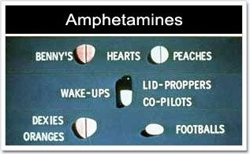

Stimulants that are created from synthetic chemicals and not directly from plants are known as amphetamines. Most amphetamines mimic the affects of certain neurotransmitters in the brain, causing an increase in neuron activity. Amphetamines increase sensory perception and feelings of excitement and can cause violent behaviour, anxiety, confusion, and insomnia. Abuse of amphetamines can cause inflammation of the heart lining, blood vessel damage, skin abscesses, and fetal deformities in babies of women who abused the drug while pregnant.
Common types of amphetamines include Speed, Crystal Meth, and Ecstasy.
The illegal amphetamine, Ecstasy, is considered a type of neurotoxin. A study in non-human primates showed that exposure to Ecstasy for four consecutive days or longer caused damage to neurons in the brain evident six to seven years later.
- National Institute on Drug Abuse
